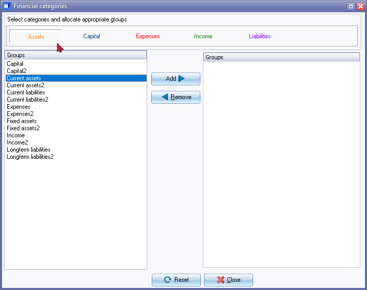

Financial categories (Setup)
You may set up to two (2) Reporting groups for your Accounts. Account groups allows you to group or categorise the accounts on which you would like to report. Each Account group need to linked to a Financial category to structure the options to view, analyse and print the financial reports (i.e. Trial balance, Income statement, Balance sheet, etc.).
|
|
Account reporting groups may also be linked to financial categories on the Setup → Accounts (Setup ribbon). |

To link Reporting groups to Financial categories:
- On the Setup ribbon, select Setup → Financial categories.

|
|
All your available account reporting groups will be listed. If you notice that not all account groups are available, you have to exit this screen and do the necessary amendments in Setup → Groups. |

- Select a category (Assets, Capital, Expenses, Income or Liabilities).
- Select a group from the group list, and click on the Add button.
|
|
You may select more than one group. To do this, press the Ctrl or Shift key and while keeping it sown, use the mouse to select another group. |
- Repeat the process until you have no more items in the group list.
|
|
The following is a basic guideline of how groups should be linked to the Financial categories:
For example, in the category Assets, select Fixed assets and click on the Add button, select Current assets and click on the Add button. The groups will be moved from the group list and be listed in the right hand side of the screen. |
|
|
These selected groups are no longer available to be added to any other category. Click on each of these categories (Capital, Expenses, Income or Liabilities) and repeat the process for each of these categories, if necessary. At the end of this process you should not have any Groups available on the left-hand side of the screen. |
- Once you have completed the process, click on the Cancel button.
- Click on the Yes button, and start again linking the groups to their respective category.
|
|
If you have added incorrect groups to a specific financial category, simply select the incorrect group from the list on the right hand side of your screen, and click on the Remove button. The option will now be available to link to another financial category. |
|
|
To clear or reset all the linked groups to the Financial categories (Assets, Capital, Expenses, Income and Liabilities), click on the Reset button. An information message will be displayed: "This will radically alter your data! We recommend that you stop and make a backup! Do you wish to continue?" You then need to start all over again to link a group. |